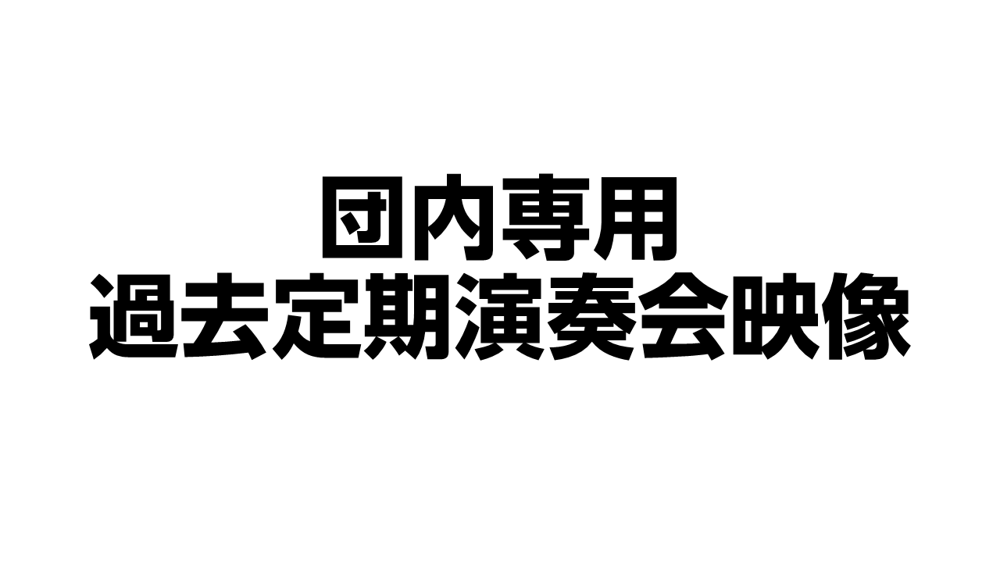

こちらは団内専用のページです(ブックマーク可)
こちらには、演奏会期間中の録音フォルダや議事録の共有リンクなどの置き場となっています。
これらのデータは、団内でのみ共有されるべきものですので、パスワードは外部の方に漏らさないようにお願いいたします。
なお、団内専用ページに掲載を希望の方は対応いたしますので、インターネット係までご連絡ください。
第130回定期演奏会期間 カレンダー
130回定期期間 録音フォルダ
総会議事録フォルダ
これまでの演奏会の映像(プレイリスト)
第119回からの映像を団内専用で公開しています。最新の映像以外はすべて団内のみに共有されるものですので、URLなどを絶対に外部に漏らさないでください。
ナゴヤディスク（映像製作会社）からのお約束
映像を撮影・提供いただいているナゴヤディスク様から、以下の点についてご協力のお願いがあります。映像の視聴や利用にあたっては以下の内容を必ず遵守してください。
- 団員個人、およびそのご家族が家庭内で鑑賞する目的でご使用いただくのは問題ございません(これには団員限定公開でのYouTubeアップロードも含みます)。それ以外の目的での複製、頒布は禁止とさせていただきます。
- インターネット上への無断アップロードを禁止とさせていただきます。YouTube、X（旧Twitter）、Instagram、TikTok、あるいはクラウドストレージ（Googleドライブ等）への一般公開は禁止といたします。公式に団のPRとして一部を使用したいというご希望のある時は事前に弊社・株式会社ナゴヤディスクまでご連絡をお願いします。
- 改変・翻案（切り抜き・再編集）はしないでください。納品した映像や音声を勝手に切り取ったり、他のBGMと混ぜたり、テロップを打ち直したりして「新しいデータ」に作り直す事はしないでください。
- 商業利用・二次利用は固くお断りいたします。弊社映像の販売（配信販売含む）、有料イベントでの上映、他社への転売などを一律禁止といたします。
